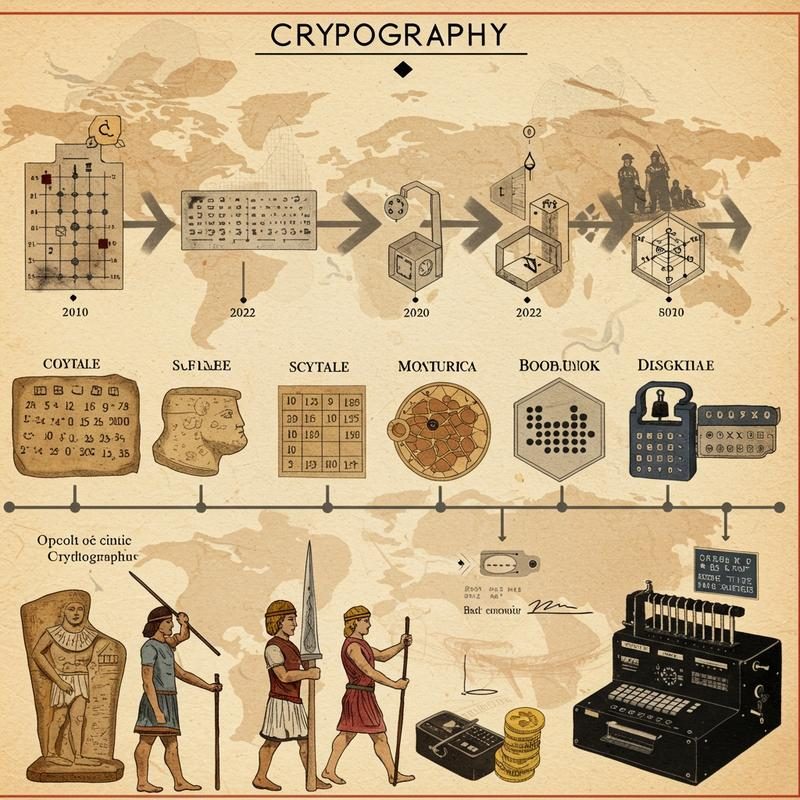

Historia de la Criptografía
La historia de la criptografía comienza en civilizaciones antiguas como Mesopotamia, Egipto y Grecia, donde se usaron técnicas para ocultar información. El primer ejemplo conocido es de 3.500 años atrás en Mesopotamia. En Egipto, se usaban jeroglíficos para hacer textos enigmáticos. En Grecia, los espartanos cifraban mensajes con un cilindro llamado escítala. Julio César creó su cifrado basado en el desplazamiento de letras. La criptografía moderna comenzó con Alberti y se desarrolló con máquinas como la Enigma y la criptografía digital.
Evolución Tecnológica
De los cifrados manuales a los algoritmos computacionales, la criptografía ha evolucionado para enfrentar nuevos desafíos de seguridad.
Momentos Clave en la Historia
- Antigüedad: Cifrado por sustitución (Cifrado César)
- Siglo XVI: Cifrado de Vigenère
- Segunda Guerra Mundial: Máquina Enigma
- 1970s: Estándar de Cifrado de Datos (DES)
- 2000s: Criptografía de Curva Elíptica y Criptografía Post-Cuántica